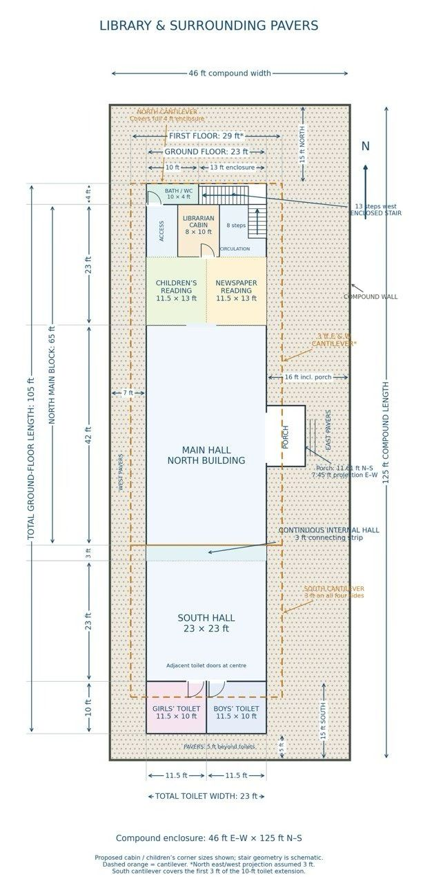

📖 अभ्यासिका विकास
अभ्यासासाठी शांत जागा, योग्य बैठक व्यवस्था, प्रकाशयोजना आणि आवश्यक अध्ययन सुविधा.
ज्ञानं सर्वार्थ साधनम् — ज्ञान हेच सर्व कार्यांचे साधन आहे.
विद्यार्थ्यांमध्ये वाचनाची आवड, ज्ञानवृद्धी आणि संस्कारक्षम विचार विकसित करण्यासाठी वाचनालय मागील २४ वर्षांपासून कार्यरत आहे. पाच-सहा वर्षांच्या बालवाचकांपासून पदवीपर्यंतच्या विद्यार्थ्यांपर्यंत सर्वांसाठी हे ज्ञानाचे केंद्र आहे.
स्थापना : १४ नोव्हेंबर २००२
नोंदणी क्र. : महाराष्ट्र / ९३६४ / सांगली
पत्ता : शिरगाव, ता. वाळवा, जि. सांगली – ४१६३१३

वाचनालय अधिक उपयुक्त, सर्वसमावेशक आणि विद्यार्थी-केंद्रित करण्याच्या दृष्टीने पुढील उपक्रम विचाराधीन आहेत. यांची अंमलबजावणी उपलब्ध निधी, मंजुरी आणि सहकार्य यांवर अवलंबून राहील.
अभ्यासासाठी शांत जागा, योग्य बैठक व्यवस्था, प्रकाशयोजना आणि आवश्यक अध्ययन सुविधा.
संगणक, इंटरनेटसुविधा, ई-पुस्तके आणि विद्यार्थ्यांसाठी विश्वसनीय डिजिटल शैक्षणिक साधने.
विद्यार्थी व विद्यार्थिनींसाठी स्वतंत्र, स्वच्छ आणि सुरक्षित स्वच्छतागृहांच्या सुविधांचा विकास.
अभ्यास टेबल, खुर्च्या, पुस्तक कपाटे आणि वाचनकक्षातील आवश्यक साहित्य.
करिअर मार्गदर्शन, वाचन स्पर्धा, भाषाविकास, प्रश्नमंजुषा आणि कौशल्यविकास कार्यक्रम.
उद्योग, संस्था, देणगीदार आणि स्थानिक नागरिक यांच्या सहकार्यातून प्रस्तावित सुविधांसाठी संसाधने उभारणे.
नवीन बालवाचकांना वाचनालयाशी जोडणे, तसेच स्पर्धा परीक्षांची तयारी करणाऱ्या विद्यार्थ्यांसाठी दर्जेदार अभ्यासिका विकसित करणे आणि आवश्यक अध्ययन सुविधा उपलब्ध करून देणे, यासाठी प्रयत्न सुरू आहेत. या आगामी प्रकल्पांसाठी निधीची आवश्यकता आहे.
इच्छुक व्यक्ती स्वेच्छेने देणगी देऊ शकतात. प्राप्त देणगीची रीतसर पावती देण्यात येईल व अधिकृत देणगी नोंदवहीत नोंद केली जाईल.
| अ.क्र. | सदस्य नाव | पद |
|---|---|---|
| 1 | श्री. पृथ्वीराज पोपटराव पवार | अध्यक्ष |
| 2 | श्री. संदीप राजाराम पाटील | उपाध्यक्ष |
| 3 | श्री. विशाल माणिकराव पवार | कार्याध्यक्ष |
| 4 | श्री. संतोष बापू शिंदे | सचिव |
| 5 | श्री. संदीप यशवंत माने | खजिनदार |
| 6 | श्री. दत्तात्रय वसंत पवार | सदस्य |
| 7 | सौ. धनश्री संजय पवार | सदस्या |
| 8 | सौ. वासंती अनिल आंबी | सदस्या |
| 9 | श्री. महेश तानाजी पवार | सदस्य |
| 10 | श्री. अमोल बाळासाहेब भोसले | सदस्य |
| 11 | श्री. सागर तुकाराम कणसे | सदस्य |
| 12 | श्री. मुरलीधर दिलीप माळी | सदस्य |
| 13 | श्री. अमोल हनमंत वाघमारे | सदस्य |
| 14 | श्री. पवनकुमार पांडुरंग पवार | सदस्य |
| 15 | श्री. विठ्ठल चंद्रकांत हवालदार | सदस्य |
| 16 | सौ. सोनाली संदीप पाटील | ग्रंथपाल |
| 17 | श्री. संतोष विलास पाटील | शिपाई |
| अ.क्र. | सदस्य नाव |
|---|---|
| 1 | मा. श्री. संजय ज्ञानदेव पवार |
| 2 | मा. श्री. विजय ज्ञानदेव पवार |
| 3 | मा. श्री. सचिन सदाशिव पवार |
| 4 | मा. श्री. नितीन सदाशिव पवार |
| 5 | मा. श्री. सुनिल रघुनाथ आंबी |
| 6 | मा. श्री. भास्कर बाळकृष्ण पवार |
| 7 | मा. श्री. अनिल शिवाजी आंबी |
| 8 | मा. श्री. दत्तात्रय सुनिल पाटील |
| 9 | मा. श्री. अमोल राजाराम यादव |
| 10 | मा. श्री. प्रशांत तानाजी पवार |
संदीप पाटील (उपाध्यक्ष)
+91 97644 84273
प्रगती सार्वजनिक वाचनालय, शिरगाव, ता. वाळवा, जि. सांगली – ४१६३१३